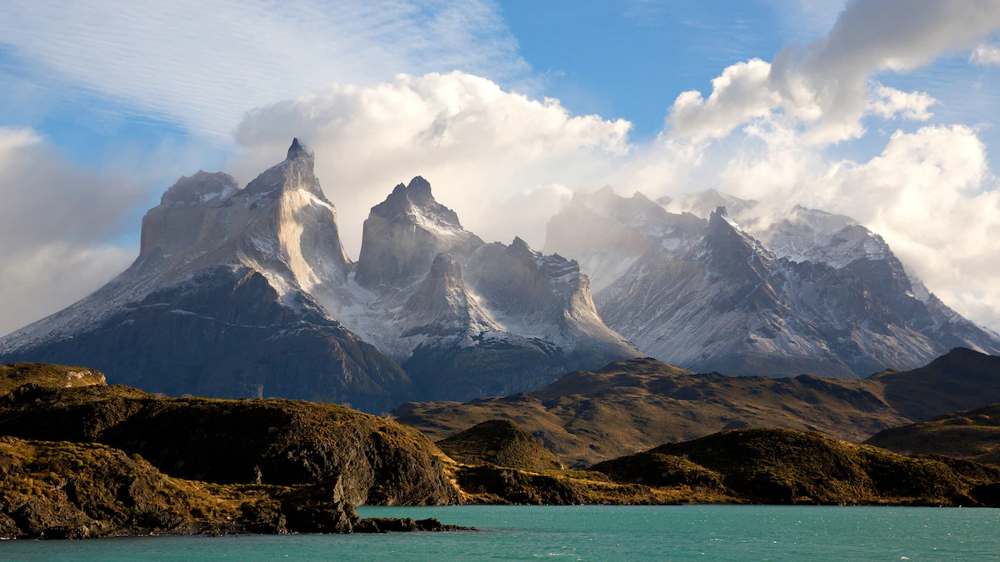
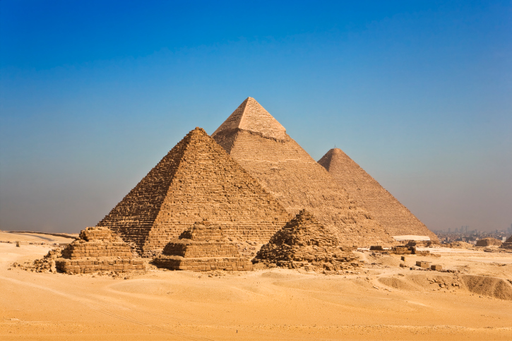
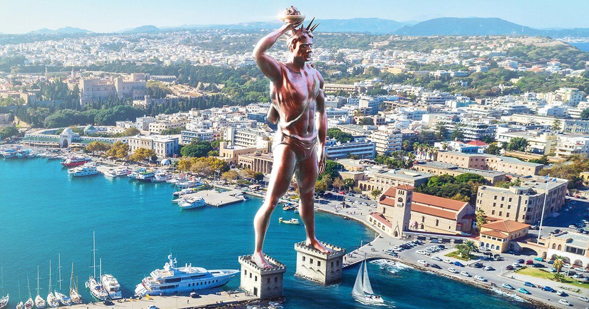
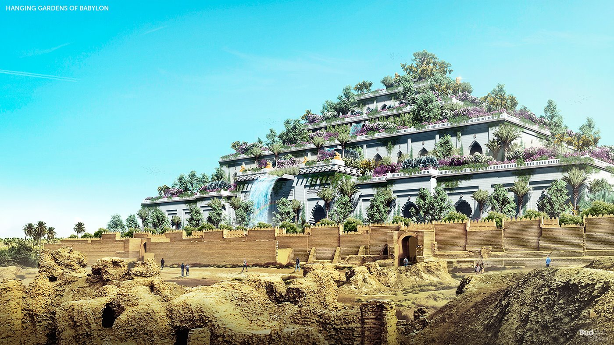

Las Torres del Paine (Chile)

El parque nacional Torres del Paine esta ubicado entre la Cordillera de los Andes y la estepa
Patagónica
En el año 2013 hubo una competencia en el cual se tenia que elegir mediante votacion a la famosa
"8va Maravilla del mundo". La competencia fue realizada entre los meses de junio y septiembre
por el sitio web "VirtualTourist.com", parte de "TripAdvisor Media Group", y motivó más de 5
millones de votos. Participaron más de 50 países con 330 destinos y entre los top ten se
incluyeron lugares de El Salvador, Colombia, Guatemala, Eslovenia, México, Escocia, Belice y
Croacia. Luego de cuatro meses de votaciones se dio por finalizado el concurso para elegir a la
8va Maravilla del Mundo, y el ganador fue "El Parque Nacional Torres del Paine (Chile)", la cual
ha destacado en todo el mundo por su belleza natural y sus paisajes.
Las Piramides de Guiza

Las piramides de Guiza ubicadas en El Cairo, Egipto
Las pirámides de Egipto son, de todos los vestigios legados por los egipcios de la antigüedad,
los más portentosos y emblemáticos reconocidos. Construidas como criptas reales para los
faraones a partir de 2630-2610 a.C, con bloques de piedra revestidos de caliza, eran a la
vista, grandes construcciones de color blanco.
Símbolos del Egipto moderno, y aunque se han localizado al menos un centenar, las más
reconocidas son las pirámides de Keóps, Kefrén y Micerino levantadas en la llanura de Guiza, por
orden de estos faraones, siendo una de ellas la más alta realizada y que se observan a las
afueras de la capital del Egipto moderno, El Cairo.
El Coloso de Rodas

Ilustración de como se veria el Coloso de Rodas en la actualidad en Grecia
El coloso de Rodas era una gran estatua del dios sol griego Helios, realizada por el escultor
Cares de Lindos en la isla de Rodas (Grecia) en 280 a. C. y destruida por un terremoto en
226 a. C. El Coloso medía aproximadamente 70 codos, o 33 metros (108,3 pies) de altura,
aproximadamente la altura de la moderna Estatua de la Libertad desde los pies hasta la
corona, lo que la convertiria en la estatua más alta del mundo.
Se derrumbó durante el terremoto del 226 a.C., aunque se conservaron varias partes del
mismo.
Se dice que...

Ilustración de como se verian los Jardines de Babilonia en la actualidad.
En el año 600 a. C., Nabucodonosor II, rey de Cadena, quiso hacer a su esposa Amytis un
regalo que demostrara su amor por ella y le recordara las hermosas montañas de su tierra,
tan diferentes de las grandes llanuras de Babilonia. Los jardines estaban situados junto al
palacio del Rey, mas precisamente al lado del río, para que los viajeros los pudieran
contemplar ya que el acceso estaba prohibido al pueblo. Desde la más alta de las terrazas se
situaba un depósito de Agua desde el cual corrían varios arroyuelos. Pero tristemente, con
la posible
decadencia de Babilonia y el fin del Imperio neobabilónico, los jardines fueron abandonados
progresivamente. Cuando Alejandro Magno llegó a la ciudad en el siglo IV a.C., los jardines
ya estaban parcialmente en ruinas y totalmente abandonados. Finalmente los jardines fueron
destruidos por el rey Evemero en el año 126 a. C.